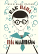

Как папа был маленьким

Любой ребёнок удивится, узнав, что его такой взрослый, умный и сильный папа когда-то шалил, капризничал и получал двойки. Не может такого быть! Но Александр Раскин не побоялся рассказать своей маленькой дочке Саше о том, как он когда-то был ребёнком. О том, как он болел, бросал под машину мяч, проказничал и мечтал сходить в кино… Так родилась эта книга - сборник коротких рассказов, каждый из которых начинается одинаково: "Когда папа был ещё маленьким…". Забавные и трогательные, а главное - искренние, эти рассказы помогут взрослым вспомнить свое детство, а детям - узнать, какими были их родители в детстве. Об этом говорит и сам автор: "У этой книги есть продолжение. Оно будет для каждого из вас своё. Ведь каждый папа может рассказать, как он был маленьким. И мама тоже. Я бы сам хотел их послушать". Истории о "маленьком папе" иллюстрировал известный художник Лев Токмаков. Для млад